Redesigning Urja into a calmer, clearer render farm for people who watch it all day
Urja is a cloud render farm where studios send 3D scenes to be rendered, and artists often leave it open for hours while they wait. I redesigned it end to end as a solo designer, across more than 20 screens from sign-up to billing.
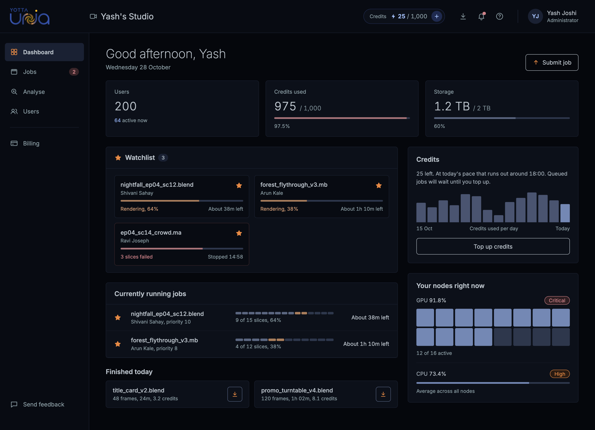
The problem
The app clashed with Urja's own brand, strained the eyes in dark mode, and gave every element the same loud weight, so people had to hunt for what mattered. When a job failed, the screen offered five buttons of equal weight and left the person to guess which one fixed it.
The app and the website felt like two different products
I started by comparing the app with Urja's own website. The website is built on deep navy, while the app used a neutral grey-black, and the app's backgrounds, greys and status colours had no clear rule behind them.
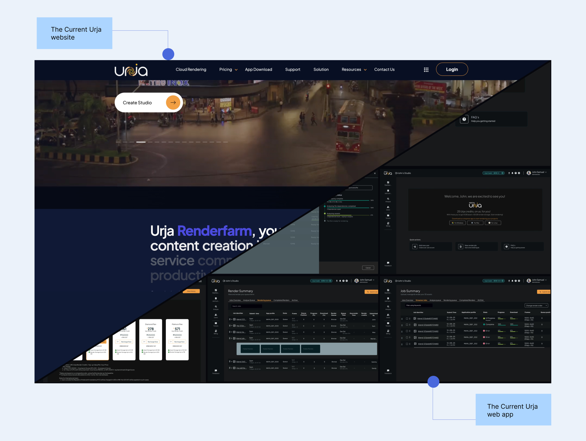
Taken together, the old screens showed everything at once and left the person to work out what mattered.
Outcome
The redesign brings the app and the website onto one navy palette, and it gives people a calm screen they can keep open all day.
WCAG 2.0 Accessibility compliance
All readable text now sits at 4.5:1 contrast or more, and the brightest bars dropped from up to 8.9:1 to about 5:1.
Faster to act on a failure
The failed job screen went from five equal buttons to one main action, one secondary action and quiet extras.
Design system guideline
Colour means status, orange means action, and the one thing that needs the person is the one thing that stands out.
The solution
I built a design system on the website's navy where colour means status, orange means action, and the one thing that needs the person is the one thing that stands out. It comes with a button hierarchy, a status ladder, and redesigned screens for jobs, job detail, submitting, dashboards, leases and billing.
Design system 2.0
I turned the research into rules so that the same thing looks the same everywhere. I started from Urja's own tokens, kept what worked, and gave every colour exactly one job.
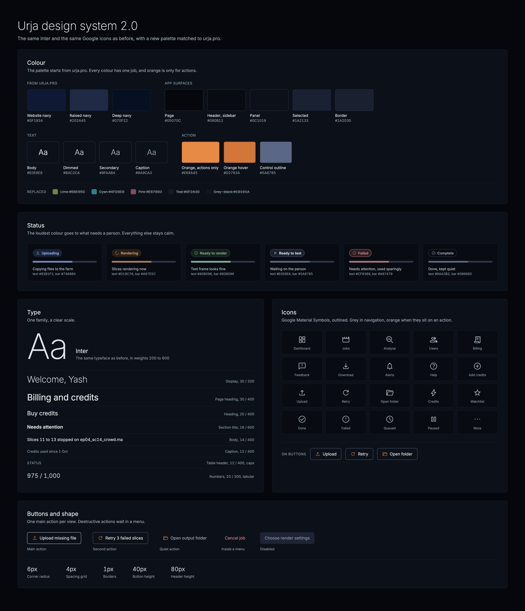
I started with an audit of the current UI
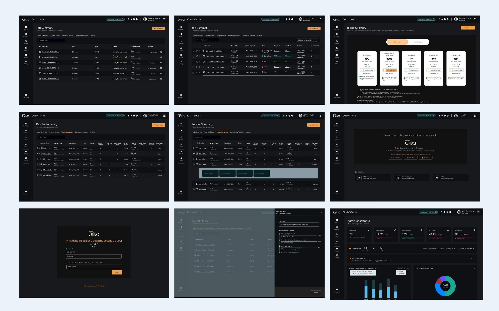
Accessibility issues
Low-contrast greys on dark
Secondary text such as dates and file sizes sat close to the background colour, which makes it tiring to read over a long session.
Status carried by wording alone
“Ready for test render” and “Ready for render” looked identical, with no colour, icon or shape to tell them apart.
Glare from bright fills
A lime progress bar and a solid orange button on near-black are the brightest things on the page, so they pull the eye even when nothing needs attention.
Visual hierarchy issues
Everything was bold
Headers and titles at heavy weight look even louder on a dark background, so nothing led.
The riskiest action was always visible
A bin icon on every row made deleting as prominent as testing a render.
Nothing acted as a single source of truth
So surfaces, borders and greys were picked screen by screen.
Two spare dark backgrounds
(#17161F and #0E0B22) had been added but used in one screen.
Status colours came from outside the brand
With lime for progress, bright cyan for queued and hot pink for errors.
Orange was doing 4 jobs at once
Across primary buttons, active tabs, links and warnings, which meant nothing orange stood out.
What I set out to do
I turned the audit into four goals and checked every screen against them.
| Goal | What this means |
|---|---|
| Keep it consistent | Use the same navy colour palette as the website so everything feels connected. |
| Make it easier to read | Avoid pure white and bright colours, use softer font weights, and keep text contrast at 4.5:1 or higher. |
| Keep the focus clear | Make the most important action or information stand out on each screen. |
| Keep things predictable | Use each colour and button style consistently so people know what to expect. |
How I approached it
Before drawing anything new, I learned the rules and wrote them down, starting with dark mode.
Learning the rules of dark mode
A dark interface follows its own rules, and these are the ones I applied.
No pure white text
Maximum contrast shimmers on a dark background, so I dimmed body text to #E0E6E8, and to #BAC2CA on busy dashboards.
Lighter headings instead of bolder ones
Light text on dark looks heavier than the same weight on white, which makes bold headings glow, so I moved headings to regular or medium.
Depth from lighter surfaces instead of shadows
With each higher layer in a slightly lighter navy.
Softer saturated colours
Bright colours vibrate on dark, so I desaturated every status colour.
Two contrast bars
Text needs 4.5:1 and shapes such as progress bars need 3:1.
How other tools rank status colours
Monitoring and ops tools tend to follow an attention ladder, where the loudest colour goes to whatever needs a person and everything else stays calm. I applied the same idea to jobs, so failed is the loudest, rendering comes next, and complete, queued and paused sit in quiet grey.
The job summary table
The previous design
5+ tabs but all were essentially the type of filters, Frame preview did not add value here, it just showed preview, the delete action under job table was always visible and prominent.
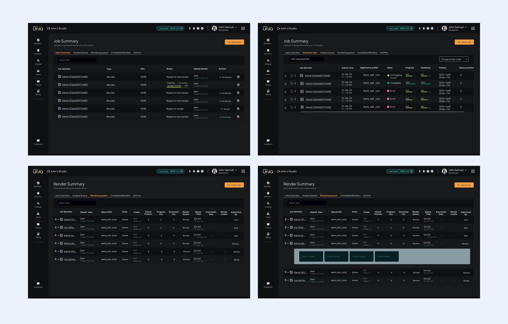
Making the table easier to use
I wanted users to be able to quickly check how their jobs were progressing, spot issues and find the actions they needed. So I made a few changes to the table.
- Progress at a glance. Small bars show which slices are done, rendering or still waiting, making it easier to track each job.
- Recognisable software icons. Each job now shows a Blender or Maya logo so users can quickly identify which software was used.
- Clearer statuses. I used a combination of shape, colour and text to make each status easier to recognise.
- Less clutter. I kept the main action visible in each row and moved delete and other options into the “…” menu.
- Easier to spot issues. Users can filter jobs by status, while a “Needs attention” count helps them quickly find jobs that have failed.
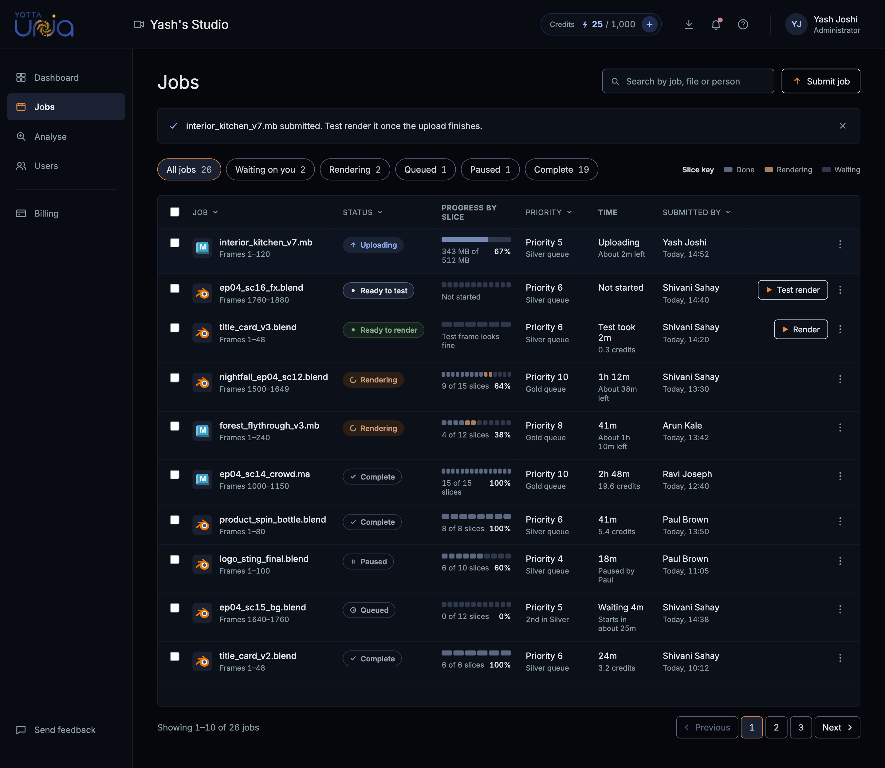
Job details page
In the previous design, there was no separate page for opening individual renders, this was handled in the streamer app, with this redesign this page was added in the UI
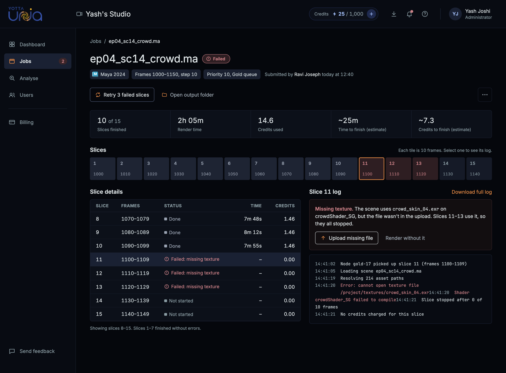
Helping users take the next step
When a file is missing, users need to understand what went wrong and how to get their job running again. I organised the actions based on what they would most likely need to do first.
- Upload missing file is the main action, placed directly inside the error card so users know where to start.
- Retry is a secondary action since users need to upload the missing file before trying again.
- Render without it and Open output folder are shown as simple text buttons to keep them accessible without drawing too much attention.
- Cancel job sits inside the “…” menu, with red used only when the option is visible.
Admin & user dashboard
Previous design
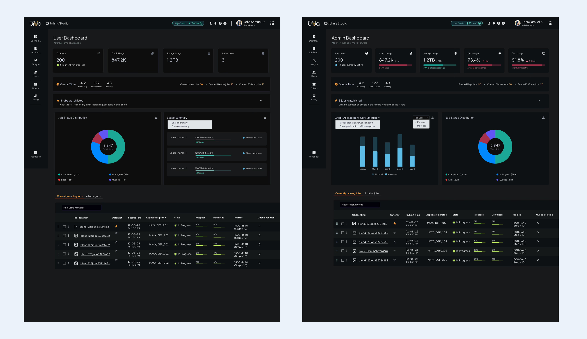
New design for admin dashboard
The dashboard changed in five ways.
- Needs attention comes first, with the person, the error and the fix on separate lines.
- Users, credits and storage sit in one calm row, with a bar wherever it helps.
- The nodes grid stays visual. I kept the grid people liked and let it carry the GPU and CPU numbers along with their High and Critical tags.
- Running and finished jobs appear as separate, short lists so they don't compete.
New design for user dashboard
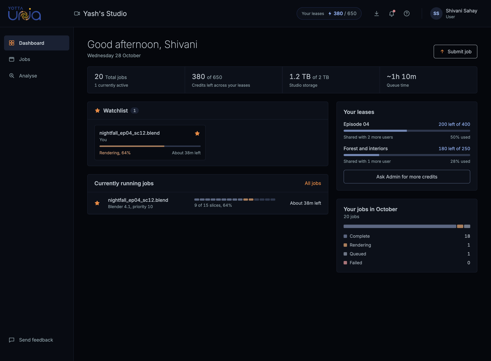
Building an onboarding was out of scope...
...so I changed the first screen after login to onboarding screen
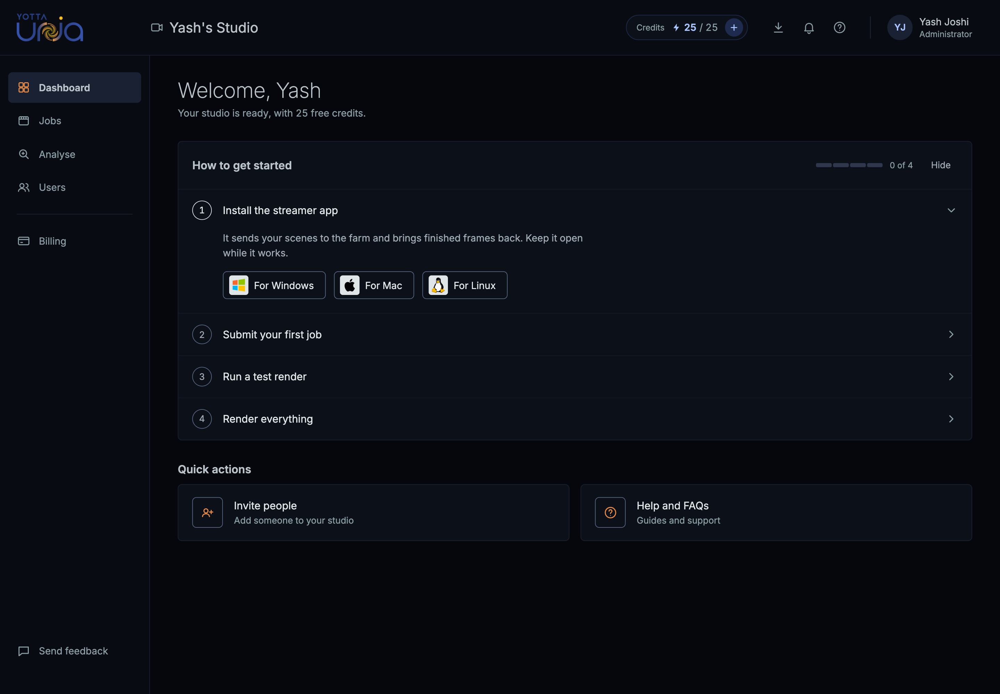
Billing and history
Previous design
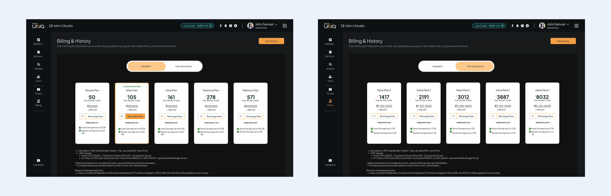
New design for billing and history
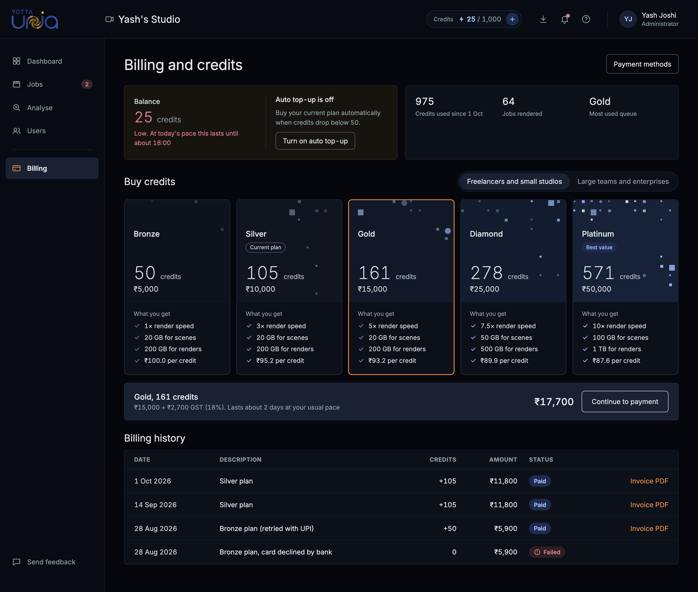
Other redesigned screens
Users and leases
User sign in & sign up
My key takeaways
Rules make small decisions fast.
Writing the dark mode rules first made hundreds of colour choices quick and consistent.
Hierarchy comes from a decision.
The failed job screen improved once I chose the one main action, well before I touched any colours.